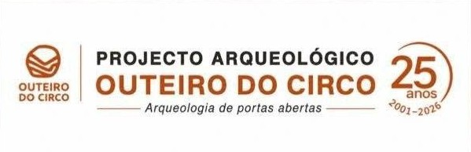

25 anos de Memórias, Pessoas e Comunidade
Visite o blogue oficial do Projeto Arqueológico Outeiro do Circo (PAOC)
A investigação desenvolvida no povoado do Outeiro do Circo ao longo dos anos contou com a ajuda indispensável de muitos voluntários, investigadores, habitantes de Mombeja e arredores e amigos. Todos contribuíram de forma inestimável para a construção desta história coletiva.
Convidamo-lo a deixar o seu testemunho em texto, fotografia e vídeo para integrar o arquivo digital comemorativo dos 25 anos do Projeto Arqueológico Outeiro do Circo.
Este espaço reunirá testemunhos de investigadores, estudantes, voluntários, habitantes de Mombeja e amigos que, ao longo destes 25 anos, contribuíram para a investigação, divulgação e valorização do Outeiro do Circo.
Participou numa campanha arqueológica? Colaborou com a equipa? Acompanhou o projeto através da comunidade ou através das suas iniciativas de divulgação?
Partilhe connosco uma fotografia, um vídeo ou uma simples recordação.
Os testemunhos recebidos serão disponibilizados neste espaço brevemente, contribuindo para a construção de uma memória coletiva do Projeto Arqueológico Outeiro do Circo.
Investigação • Voluntariado • Património
Esta comemoração pretende reconhecer e agradecer a todas as pessoas e instituições que contribuíram para a investigação, divulgação e valorização do Outeiro do Circo.